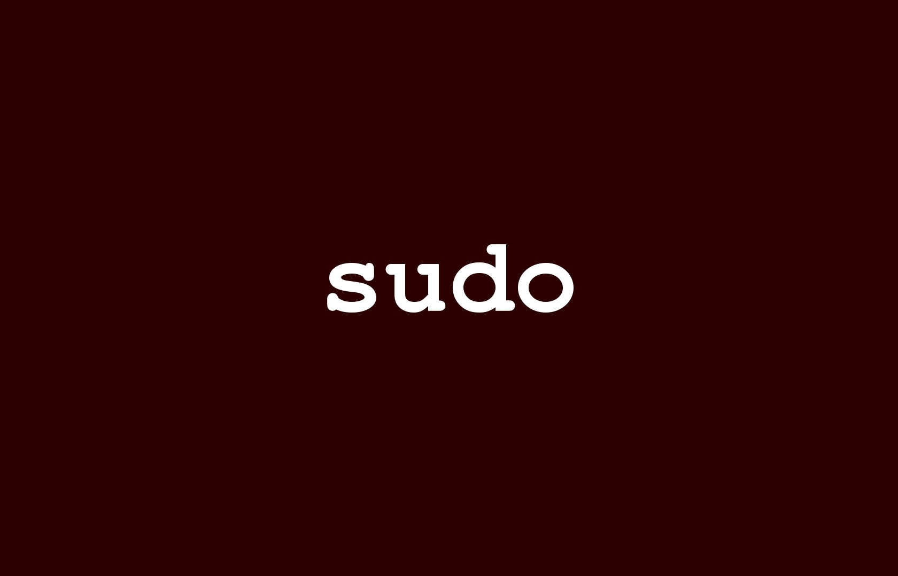

纸上得来终觉浅，绝知此事要躬行。
**sudo**是 linux 系统管理指令，是允许系统管理员让普通用户执行一些或者全部的 root 命令的一个工具，如 halt，reboot，su 等等。这样不仅减少了 root 用户的登录 和管理时间，同样也提高了安全性。sudo 不是对 shell 的一个代替，它是面向每个命令的。

1. su 命令
**
su**是Switch User的缩写，用于切换当前用户身份到其他用户身份
命令参数
-c <指令>：执行完指定的指令后，即恢复原来的身份-s：指定切换用户身份之后想要执行的shell版本-f：适用于csh与tsch，使shell不用去读取启动文件-m/-p：变更身份时，不要变更环境变量-l：改变身份时也同时变更工作目录，以及HOME、SHELL、USER、PATH变量
注意事项
su的特殊用法root用户切换身份，输入su [用户名]，则直接切换至普通用户不需要密码- 普通用户切换身份，输入
su [用户名]，需要输入用户的密码进行验证合法性
su与su -的区别su是切换到其他用户，但是不切换环境变量su -是完整的切换到一个用户环境，包括环境变量- 可以使用
export命令查看一下，就知道两个命令的区别了
实战演示
# 切换到指定用户
su -l root
# 临时切换用户身份执行指令并退出
su -l root -c 'ls'
2. sudo 命令
- 命令参数
-u <用户>：以指定的用户作为新的身份，若不加上此参数则预设以root作为新的身份-l：列出目前用户可执行与无法执行的指令-s：执行指定的shell或是/etc/passwd里所指定的shell-p：改变询问密码的提示符号，%u会代替为使用者账号、%h会显示主机名称-b：将要执行的指令放在后台执行-H：将HOME环境变量设为新身份的HOME环境变量-v：延长密码有效期限5分钟，5分钟内没有执行操作就需要重新输入当前用户密码，默认为5分钟-k：结束密码的有效期限，也就是下次再执行sudo时便需要输入密码-V：显示版本信息-h：显示帮助
su和sudo的区别
由于 su 对切换到超级权限用户 root 后，权限是无限制性的，所以 su 并不能担任多个管理员所管理的系统。如果用 su 来切换到超级用户来管理系统，也不能明确哪些工作是由哪个管理员进行的操作。特别是对于服务器的管理有多人参与管理时，最好是针对每个管理员的技术特长和管理范围，并且有针对性的下放给权限，并且约定其使用哪些工具来完成与其相关的工作，这时我们就有必要用到 sudo。
通过 sudo，我们能把某些超级权限有针对性的下放，并且不需要普通用户知道 root 密码，所以 sudo 相对于权限无限制性的 su 来说，还是比较安全的，所以 sudo 也能被称为受限制的 su。另外 sudo 是需要授权许可的，所以也被称为授权许可的 su。
sudo 执行命令的流程是当前用户切换到 root（或其它指定切换到的用户），然后以 root（或其它指定的切换到的用户）身份执行命令，执行完成后，直接退回到当前用户；而这些的前提是要通过 sudo 的配置文件/etc/sudoers 来进行授权；
实战演示
# 以指定身份运行命令
sudo -u centos whoami
3. sudo 授权配置
使用
sudo授权之后，能够让某用户以另外一个用户的身份运行命令
- 配置文件
/etc/sudoers或者使用visudo- 使用
visudo的原因，防止两个用户同时修改它，也能进行有限的语法检查- 可以使用
man sudoers查询配置文件格式信息等sudoers文件的属主和属组ID必须都是0，文件权限位是0440(-r--r-----)
- 配置文件格式
# 配置文件格式
# user: 运行命令者的身份
# host: 通过哪些主机
# runas: 以哪个用户的身份
# command: 运行哪些命令
user host=(runas) command
- 格式参数
# users列表: 多个用逗号分隔，可以使用!取反
username # 直接给出用户名
#uid # 用户UID
user_alias # 用户别名
%group_name # 用户组
%#gid # 组GID
# host列表: 多个用逗号分隔，可以使用!取反
ip # IP地址
hostname # 主机名
netaddr # 网络地址
# runas列表: 多个用逗号分隔，可以使用!取反
username # 直接给出用户名
#uid # 用户UID
user_alias # 用户别名
%group_name # 用户组
%#gid # 组GID
# command列表: 多个用逗号分隔，可以使用!取反
command name # 命令名称
directory # 目录下的所以命令
sudoedit # 拥有sudo授权能力
- 配置文件实例
# 配置文件实例
root ALL=(ALL) ALL # 以指定用户
%wheel ALL=(ALL) ALL # 组内的用户
- 定义别名 Alias
- 格式：
Alias_Type NAME = item1, item2, ... NAME：必须使用全大写字母Alias_Type：可以为User_Alias、Host_Alias、Runas_Alias、Cmnd_Alias
- 格式：
# 定义用户别名
User_Alias NETADMIN = netuser1, netuser2
# 定义命令别名，passwd命令必须指定用户且以a-z开头，并不能修改root用户
Cmnd_Alias USERADMINCMNDS = /usr/sbin/useradd, /usr/bin/passwd [a-z]*, !/usr/bin/passwd root
# NETADMIN用户只能使用USERADMINCMNDS指定的命令
NETADMIN ALL=(ALL) USERADMINCMNDS
# 定义用户别名
User_Alias USERADMIN = poweruser1, poweruser2
# 定义命令别名
Cmnd_Alias USERADMINCMNDS = /usr/sbin/useradd, /usr/sbin/usermod
# NOPASSWD参数用于定义sudo切换的使用不用输入密码
USERADMIN ALL=(ALL) USERADMINCMNDS
USERADMIN ALL=(ALL) NOPASSWD: USERADMINCMNDS
4. sudo 日志功能
sudo为安全考虑得很周到，不仅可以记录日志，还能在有必要时向系统管理员报告。但是，sudo的日志功能不是自动的，必须由管理员开启。
# 创建日志保存文件
touch /var/log/sudo.log
# 默认情况下，sudo日志通过syslog3，但要指定自定义日志文件，请使用logfile参数
Defaults logfile="/var/log/sudo.log"
# 要在自定义日志文件中记录主机名和四位数年份，请分别使用log_host和log_year参数
Defaults log_host, log_year, logfile="/var/log/sudo.log"
5. sudo 使用技巧
- 特殊配置
# 要不询问某个用户的密码
Defaults:USER_NAME !authenticate
# 密码过期时间，之后就需要密码验证了
Defaults:用户名 timestamp_timeout=20 # 这里密码过期时间为20分钟
# 禁止root登陆
passwd -l root # 使用passwd命令锁住root用户
root:!:12345:::::: # 编辑/etc/shadow文件，将root的加密口令列替换为“!”
# 增加sudo密码尝试限制，默认值为3次
Defaults passwd_tries=5
# 输入错误的sudo密码时显示自定义消息
Defaults badpass_message="Password is wrong, please try again，thank you！"
# 在TTY用户登录会话上启用sudo
Defaults requiretty
- 权限 Umask
- sudo 会统一用户的 umask 值和它自己的 umask(默认是 0022)。这会阻止 sudo 创建比该用户的 umask 允许的打开权限更多的文件。这默认是合理的，因为没有使用自定义 umask。但是这可能导致用 sudo 运行一个命令和 root 运行一个命令建立的文件权限不同。如果这导致了问题，sudo 提供了一个方法来修复 umask，即使想要的 umask 比用户指定的 umask 权限还要多。
# 添加下面内容 (使用visudo) 会覆盖sudo的默认行为
# 这会将sudo的umask设置为root的默认umask(0022)，覆盖掉默认行为
# 无论用户的umask设置成什么都会使用这里设定的值
Defaults umask = 0022
Defaults umask_override
让
sudo使用/etc/sudoers.d中的文件- sudo 可以解析/etc/sudoers.d/目录中的文件，这样就不需要编辑单一的/etc/sudoers 文件，可以单独修改一个设置然后放入此目录。
- 目录中配置的格式和/etc/sudoers 一样，如果新配置有问题，可以删除这个文件而不用编辑/etc/sudoers。
- /etc/sudoers.d/目录中的文件是按字母顺序加载的，. 或 ~ 开头的文件会被跳过。
- 文件名应该以双字母开头，例如 01_foo，请注意配置文件的顺序以避免相互覆盖。
经典案例
# 1.用户别名组中的用户可以在FILESERVERS这组host里面调用root用户执行OTHERS命令组的权限
# 多个命令组用逗号分隔
ADMINS FILESERVERS=(ALL) NOPASSWD:OTHERS
# 2.用户chenmh这个用户可以在本机以调用root用户来执行所有的命令
chenmh localhost=(root) NOPASSWORD:ALL
# 3.用户chenmh可以调用root用户创建目录test，也只能创建test目录
chenmh ALL=(ALL) NOPASSWD: /bin/mkdir test
# 4.dev组的用户可以执行关机shutdown命令
%dev ALL=(ALL) NOPASSWD:/sbin/shutdown